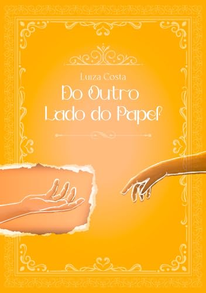

O Livro
Do outro ladodo papel é um livro de fantasia escrito por Luiza Costa Silva, publicado em 2021. A história gira em torno de Moti, um personagem de um livro mágico que pode se comunicar com os leitores. Junto com seus amigos Amélia, Otto e Ravinus, eles fogem do governo, que quer destruir o livro e todos os seus habitantes. No meio dessa aventura, Moti se apaixona pelo leitor, e está disposto a terminar seu próprio relacionamento para encontrá-lo. O livro explora temas como amor, amizade, liberdade e escolhas.
Confira abaixo um resumo da Fantasia publicado pela autora:
Uma mistura fantasia, romance e suspense, em uma trama envolvente e original. Um universo onde os personagens de um livro podem interagir com os leitores, através de uma conexão mágica. O protagonista, Moti, é um jovem rebelde que vive em um mundo opressivo, onde o governo controla tudo, inclusive a literatura. Ele faz parte de um grupo de resistência, que tenta proteger o livro onde ele vive, e todos os seus habitantes, das garras do tirano Rei Nero.
O personagem
Moti tem um relacionamento com Amélia, uma garota corajosa e leal, que também faz parte do grupo. Mas tudo muda quando ele conhece o leitor, um humano que lê o livro onde ele está. Moti sente uma atração irresistível pelo leitor, e começa a se comunicar com ele através das páginas. Ele descobre que o leitor vive em um mundo diferente, onde há liberdade, diversidade e beleza. Moti se apaixona pelo leitor, e decide que quer sair do livro e ir ao seu encontro. Mas isso não será fácil, pois ele terá que enfrentar o Rei Nero, que quer capturá-lo e usar seu poder para dominar os dois mundos. Além disso, ele terá que lidar com as consequências de seu amor proibido, que pode colocar em risco sua amizade com Amélia, Otto e Ravinus, seus companheiros de aventura.

Aliás, esse desenho foi feito pela autora! Nos rascunhos do inicio do projeto!